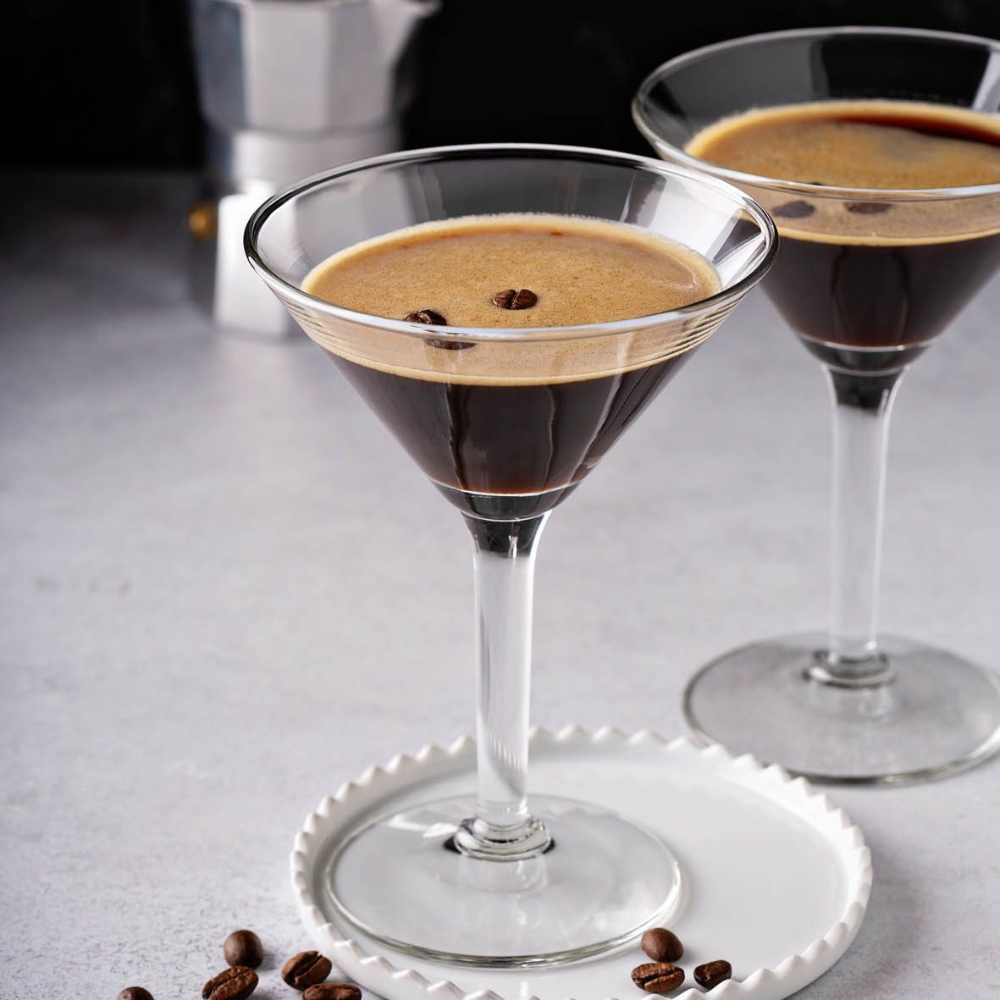

Espresso Martini

Description
A classic cocktail for the coffee lover, and easier to make than you might think. All you need is a shaker and a strainer.
1 cocktail
Ingredients:
- 4cl vodka
- 1cl Kahlua or other coffee liquer of your choice. (Can be omitted if the coffee is of great quality)
- 6-8cl of coffee, preferably espresso but regular coffee also works well.
- Ice
- (Optional) Coffee beans
Steps:
- Fill your shaker with ice and add all the ingredients.
- Shake vigorously for between 10-15 seconds. The more you shake the more of that nice foam will build up.
- Strain your cocktail into a glass on foot, preferably a martini glass but a coupe also works really well.
'
- (Optional) Sprinkle a few coffee beans on top for a nice presentation. Enjoy immediately.